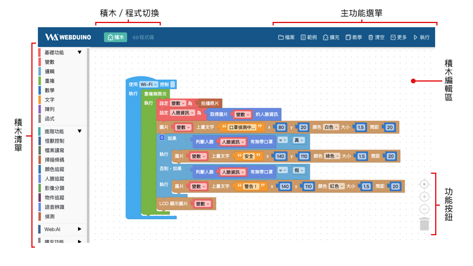
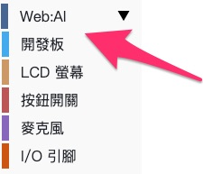
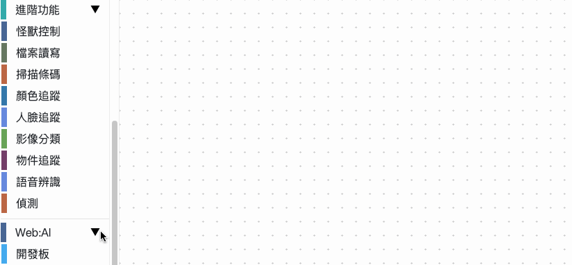

程式積木平台介紹
Web:AI 程式積木分成線上版和安裝版兩種，可透過 Wi-Fi 和 USB 進行控制，使用上功能幾乎相同，可以選擇符合自己需求的版本作使用。
關於 線上版 與 安裝版 的區別，歡迎參考以下介紹：
線上版
線上版不需要安裝任何軟體，只要電腦有連接上網路，透過瀏覽器打開就能使用，不論是 Windows 或 Mac 都能運作，適合快速體驗的使用者。
- 線上版連結：Web:AI 程式積木
分享功能 ( 線上版專屬 )
「分享」功能可以快速存檔產生一段「網址」，下次再開啟這個網址就可以開啟檔案。因為安裝版無法開啟網址，所以無法使用該選項。
網頁版限定 Google Chrome 瀏覽器，目前 不支援 USB 連線 控制！
安裝版
安裝版可以在沒有網路的環境下使用，下載後執行，將 Web:AI 開發板透過 USB 連接即可使用。
- 安裝版連結：Web:AI 安裝版
安裝版目前僅限定在 Windows 系統 使用。
介面
基本功能
Web:AI 積木平台的操作介面分成下列幾個區塊：
積木編輯區：所有程式積木的組裝、編輯都會在這個區域內執行。
積木清單：包含基本功能、進階功能、Web:AI 開發板操控和擴充功能積木。
主功能選單：包含各種常用功能以及積木的部署。
- 檔案：開啟、儲存 json 檔，以及將積木做成網址儲存分享。
- 範例：多種現成的積木範例，可以直接打開使用。
- 擴充：具有特殊功能的積木，可以將積木加入使用。
- 教學：前往教學手冊。
- 清空：將積木編輯區的積木全部清除。
- 更多：包含 Wi-Fi 設定、網頁互動區、進入商城、下載安裝版、切換語言。
- 執行：將積木編輯區做好的積木部署至 Web:AI 開發板中。
積木 / 程式碼切換：將寫好的程式轉換為標準程式，讓學習程式更簡單。
功能按鈕：夠快速縮放畫面積木或刪除積木。

程式積木介紹
「積木」是翻譯自「block」這個英文單字，其操作方式類似「組裝積木」或「拼圖」的概念。透過互相堆疊和搭配組合，就能判斷不同程式的邏輯或依據指定的排列順序，實現對應的動作。
編輯積木
使用滑鼠在指定的積木上按 右鍵，就能開啟積木的功能列表，功能如下：
- 複製：複製這塊積木。
- 加入註解：如同程式的註解功能，替這塊積木加入註解。
- 外部輸入 / 單行輸入：切換積木的樣式。( 不影響程式執行 )
- 收合區塊 / 展開區塊：當積木編輯區有太多積木時，可以將積木收合，減少畫面中的積木數量。
- 刪除區塊：刪除這塊積木。
- 教學：查看積木的教學說明。
- 小工具：特定積木需要配合小工具作進階功能使用，點擊後可以打開。

開始執行第一支程式
首先從左側的 積木清單 中找到「Web:AI」，下方有「開發板」。

點擊「開發板」，可以看到「開發板」積木，將積木拉出。

在「開發板」積木中輸入開發板 Device ID。

關於開發板的 Device ID，歡迎參考：初始化設定 ( 第一次使用請看這裡 )。
從左側的 積木清單 中找到「Web:AI」，點擊下方的「LCD 螢幕」。
拉出「LCD 顯示文字」積木，放進「開發板」積木內。

按下右上角「執行」，即可將程式部署到 Web:AI 中。
當部署成功後，可以看到 Web:AI 開發板的 LCD 螢幕顯示「Hello World」。

成功執行第一支程式後，就可以開始體驗後續的更多更強大的 Web:AI 程式了！